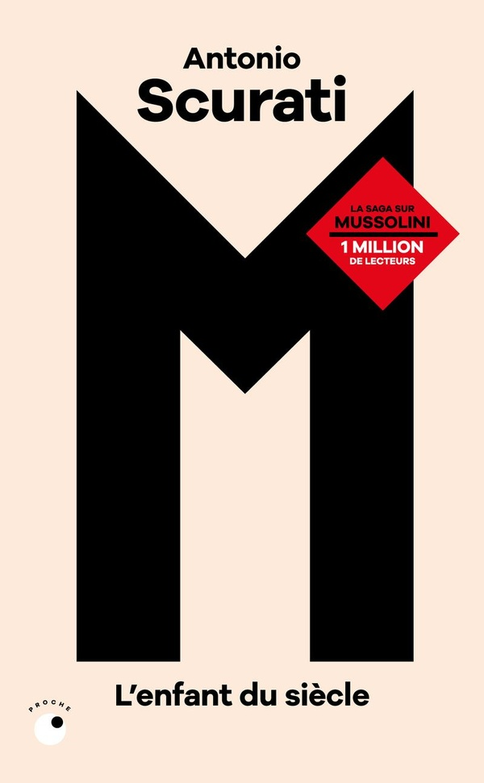

Prodigieuses créatures, de l’autrice américaine Tracy Chevalier, nous amène au début du XIXème siècle sur la côte anglaise. Le récit alterne les points de vue de Mary Anning et d’Elizabeth Philpott. La première est une jeune ouvrière, devenue célèbre pour la découverte des premiers fossiles d’ichtyosaures et de plésiosaures, la seconde est une dame de la bourgeoisie qui, en l’absence de mariage, se prend de passion pour les fossiles. Pourtant issues de mondes différents (le texte aborde d’ailleurs ces différences de classes), elles se lient d’amitié et font front face à des hommes prompts à s’approprier leur travail, en particulier celui de la très talentueuse Mary dont les exploits ne tardent pas à se répandre. Très bien documentée, cette histoire donne une bonne idée des bouleversements que ces découvertes ont pu causer dans la société de l’époque et à quel point les femmes y ont pris une part active, sans pour autant voir leurs noms apparaître dans les musées.
Sortie originale (anglais) : 2009 / Version française : 2010 (traduction : Anouk Neuhoff)
M, l’enfant du siècle me laisse un drôle de sentiment. D’une part il m’a fort marqué et j’ai le sentiment d’avoir beaucoup appris sur les conditions de naissance du fascisme en Italie au début des années 1920. D’autre part, c’est long. Très long. C’est probablement indissociable de la volonté de précision et d’immersion, mais il faut s’accrocher, surtout quand presque aucun des noms mentionnés ne nous est familier à part celui de Mussolini, et cela sur plus de 800 pages. On suit ici son ascension, d’obscur journaliste rejeté par ses camarades de gauche pour avoir soutenu la participation de l’Italie à la première guerre mondiale, à la prise du pouvoir complète en 1922. On assiste à la naissance et aux transformations du mouvement fasciste, né des décombres d’une guerre pourtant remportée par l’Italie, à l’étrange expérience de la ville libre de Fiume, à l’effondrement d’une gauche triomphante, à la violence débridée des chemises noires et à d’innombrables compromissions. C’est long, mais édifiant. C’est aussi documenté, chaque chapitre se terminant par des documents d’époque. Et ça ne s’arrête pas là, vu qu’Antonio Scurati sort cette année un cinquième tome de cette série de romans sur l’histoire du fascisme italien.
Sortie originale (italien) : 2018 / Version française : 2020 (traduction : Nathalie Bauer)